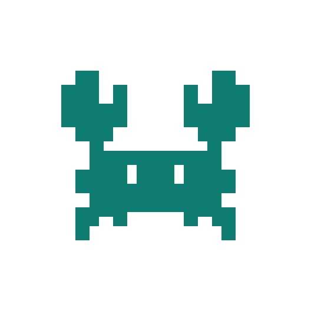

도구 전환
대화, IDE, VM, 빌드 서버, 보드 예약, 이슈 작성, 메신저를 사람이 이어 붙입니다.
HELLO AI · 2026
PlatformClaw는 각 엔지니어에게 독립된 Assistant, Workspace, Execution Target과 정책 경계를 제공하는 멀티유저 AI 엔지니어링 플랫폼입니다.

Problem
대화, IDE, VM, 빌드 서버, 보드 예약, 이슈 작성, 메신저를 사람이 이어 붙입니다.
누구의 Agent·세션·작업공간·자격 증명인지 경계가 흐리면 자동화가 위험해집니다.
개인 개발 VM의 build와 보드 제어, 재시도, 보고서가 한 실행으로 추적되지 않습니다.
Closed loop
모든 단계는 같은 run_id와 correlation_id로 연결되고, 실패도
보존되는 결과가 됩니다.
Multi-user control plane
Personal Agent A
Session A
Workspace A
Execution Target A
Personal Agent B
Session B
Workspace B
Execution Target B
교차 접근은 Gateway 호출 전에 거절하며, 브라우저에 개인 자격 증명을 노출하지 않습니다.
04 / 13Execution boundary
플랫폼 서버의 격리 Sandbox. 기본값이며 개인 작업공간을 사용합니다.
사용자에게 할당된 개인 개발 VM과 Workspace에 접속하고 SSH lease를 재사용합니다.
선택된 target에서 bounded catalog를 읽고 실행 snapshot을 고정합니다.
선택한 VM 연결이 실패해도 더 약한 실행 위치로 조용히 fallback하지 않습니다.
05 / 13Knox policy
대화 채널은 transport이고, 실행·소유권 정책은 Control Plane이 소유합니다.
06 / 13Board Farm
Credential boundary
암호화된 credential envelope와 endpoint binding, revision을 관리합니다.
local one-shot grant를 redeem하고 SSH master lease에만 사용합니다.
Failure is a state
Restricted Control UI
Business value
요청부터 증거·보고까지 하나의 추적 단위
브라우저에 노출되는 VM·MCP 비밀값
정책 경계를 유지하며 확장되는 사용자·보드·Skill
실제 시간 절감·성공률은 내부 Golden Run에서 측정하며, 사전에는 추정치로 제시하지 않습니다.
11 / 13Provenance
Gateway, Agent, Session, Tool, Plugin SDK, Sandbox의 generic contract와 Git ancestry.
Enterprise identity, 멀티유저 Control Plane, 개인 VM·credential 경계, Knox routing, 제한 UI, Board Farm workflow.
기존 사내 Board Farm·Jira·Global Skills는 INTERNAL_INTEGRATION_REQUIRED로 분리하고 출처를 명시합니다.
12 / 13Evidence plan
MOCK VERIFIED
결정적 adapter로 build → lease → deploy → boot → validate → report → Knox 결과와 격리 거절을 재현합니다.
INTERNAL FINAL
실제 Board Farm·Jira·Knox·보드 결과, 비즈니스 지표, 5분 이내 영상을 별도 Final Gate로 교체합니다.